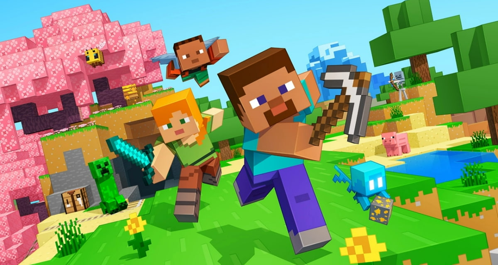
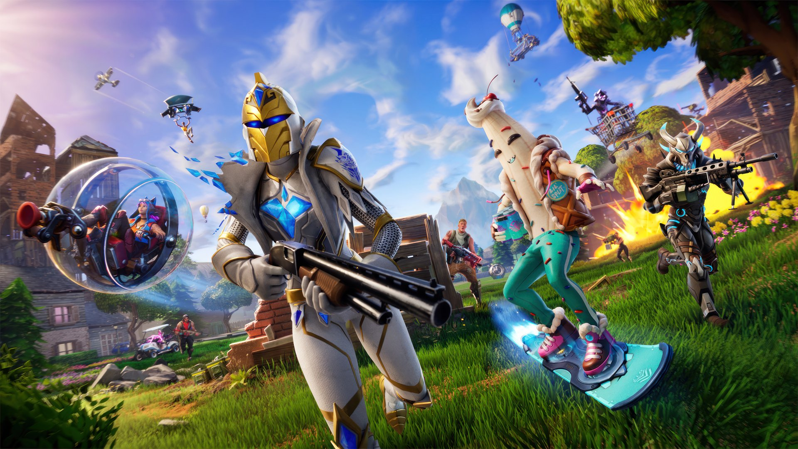

Welcome to Bbrans Game Corp!
Welcome to My Game Corp, a website dedicated to video games
and the gaming community. Whether you enjoy adventure,
action, sports, or multiplayer games, there is something
for everyone.
Explore some of the most popular video games and discover
what makes them enjoyable for players around the world.
Popular Video Games
Here are some popular video games that have attracted
players from around the world.
Minecraft

Minecraft is a sandbox game where players can explore,
build structures, collect resources, and create their
own adventures. Players can explore different environments,
discover caves, craft tools, and build anything they can
imagine. The game also offers survival and creative modes,
giving players different ways to enjoy the experience.
Fortnite

Fortnite is an online multiplayer game featuring different
game modes, creative experiences, and competitive gameplay.
Players can explore maps, complete challenges, collect items,
and customize their characters. Fortnite is also known for
its frequent updates, special events, and collaborations
with popular movies, music, and entertainment.
Roblox

Roblox is an online platform where players can explore
experiences created by other users and create games of
their own. There are many different types of experiences,
including adventure, racing, simulation, and obstacle
courses. Players can customize their avatars, meet friends,
and discover new games made by the Roblox community.
Mario Kart

Mario Kart is a racing game series where players compete
using characters from the Mario universe. Players race
across different tracks, collect items, and use special
power-ups to make races more exciting. The series offers
different characters, vehicles, and racing environments.
Players can compete against computer-controlled racers
or challenge friends in multiplayer races.